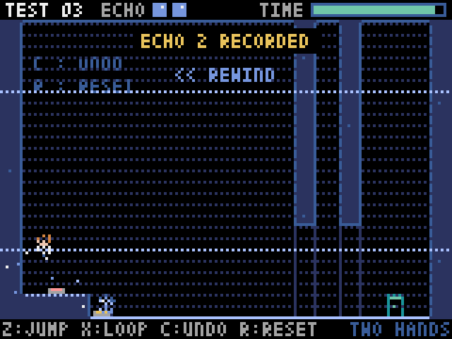
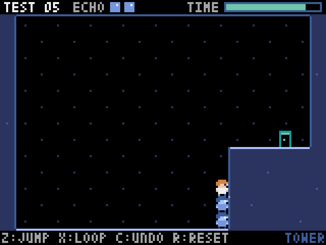
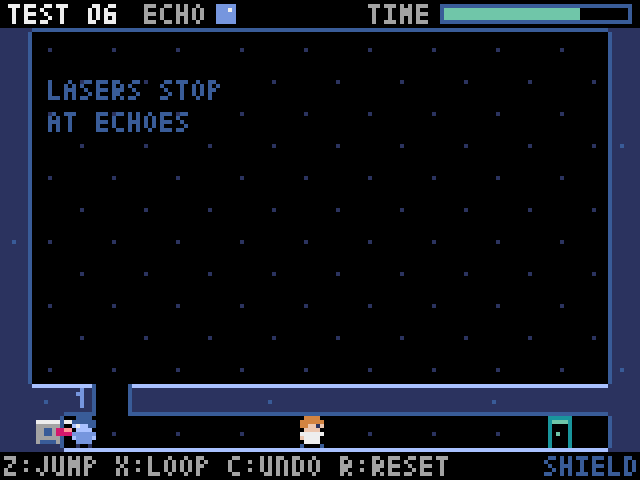
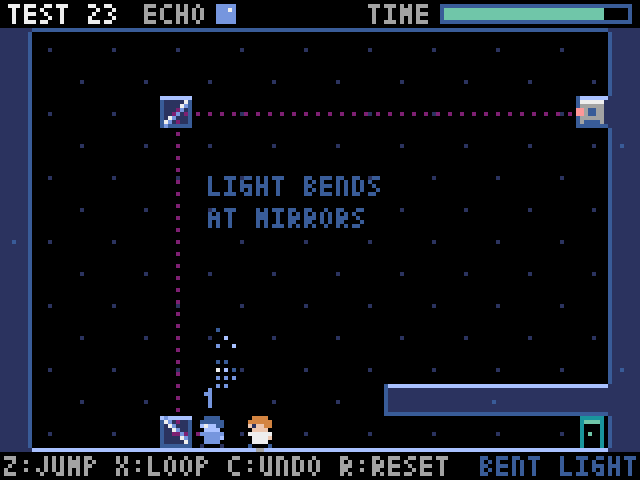

01HOW IT WORKS
さっきの自分が、仲間になる。
X キーでループすると時間が巻き戻り、それまでの自分の動きが「エコー」として再生されます。エコーは記録したとおりに動くので、どこで何をさせるかを考えて動きを置いていくのがカギです。面ごとに使えるエコーの数は決まっています。
-

01スイッチ役エコーがスイッチを押している間に、自分が扉を通る。 -

02巻き戻しループすると時間が巻き戻り、記録した動きが再生される。 -

03足場エコーを積み重ねて、届かない段差へ。 -

04盾エコーの体でレーザーをさえぎる。 -

05曲がる光鏡で曲がるレーザー。光の通り道を読んで、エコーを置く。
02CONTROLS
操作方法
ゲームの画面に出る表記と同じキーで遊べます。
キーボード
- ←→
- 移動
- Z
- ジャンプ（長押しで高く跳ぶ）
- X
- ループ（今の動きをエコーとして残し、時間を巻き戻す）
- C
- 取り消し（最後のエコーを消す）
- R
- リセット（エコーを全部消す）
- P
- 一時停止メニュー
タイトル画面では ↑↓ で選び、Z で決定します。
スマホ
画面の下に出るボタンで遊べます。ボタンの上に、キーボードと同じ名前（Z JUMP・X LOOP・C UNDO・R RESET・P MENU）が表示されます。画面に触れると全画面になります。
03BEFORE PLAY
遊ぶ前に
- インターネット接続が必要です。ゲームの本体を読み込むため、開始まで数秒かかることがあります。
- タイトル画面が出たら、画面をクリック（スマホはタップ）して始めます。
- 進み具合は、このブラウザに保存されます。シークレットウィンドウや、サイトのデータを消したときは最初からになります。
- iPhoneのSafariでは、全画面にならない場合があります。
- 体験版は、Pyxel（MITライセンス）とPyodide（MPL-2.0）を同梱しています。ライセンスの表記はこちらです。